Post Office Box 우선순위 (전 캐릭터 공통)
충분한 시간이 지나면 모든 캐릭터에서 Post Office의 박스를 전부 최대로 올릴 수 있습니다. 하지만 처음에는 박스 수가 한정되어 있으므로, 먼저 어떤 박스를 선택하느냐가 매우 중요합니다.
아래는 클래스별로 권장하는 Post Office 우선순위(위에서 아래 순)입니다. 특정 캐릭터에서 스킬링·전투·유틸리티가 부족하다고 느끼면 순서를 조정해도 됩니다. 모든 캐릭터는 스킬링 박스부터 시작하는 것을 권장합니다. 스킬링은 제작, 스탬프, 연금술에 중요하기 때문입니다. 그 다음 전투나 유틸리티 박스를 기호에 맞게 추가하세요.
| 클래스 | 스킬링 우선순위 | 전투 우선순위 | 기타 유틸리티 우선순위 |
|---|---|---|---|
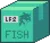 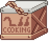 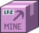 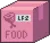 Fish Shipment, Cooking Shipment, Mine Shipment, Food Shipment, Health Shipment |
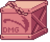 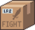 DMG Shipment, Fight Shipment, Utility Shipment |
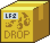 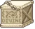 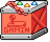 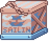 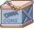 Drop Shipment, Divine Shipment, Gaming Shipment, Scurvy Shipment, Construction Shipment, Myriad Shipment |
|
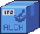 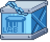 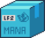 Alchemy Shipment, Lab Shipment, Chop Shipment, Food Shipment, Mana Shipment |
DMG Shipment, Fight Shipment, Utility Shipment | Drop Shipment, Divine Shipment, Gaming Shipment, Scurvy Shipment, Construction Shipment, Myriad Shipment | |
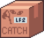 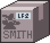 Catching Shipment, Food Shipment, Scurvy Shipment, Smith Shipment |
DMG Shipment, Fight Shipment, Utility Shipment | Drop Shipment, Divine Shipment, Gaming Shipment, Scurvy Shipment, Construction Shipment, Myriad Shipment | |
| Mine Shipment, Construction Shipment, Gaming Shipment, Food Shipment, Health Shipment | DMG Shipment, Fight Shipment, Utility Shipment | Construction Shipment, Drop Shipment, Divine Shipment, Scurvy Shipment, Myriad Shipment | |
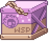 WSP Shipment, Chop Shipment, Food Shipment, Mana Shipment |
DMG Shipment, Fight Shipment, Utility Shipment | Drop Shipment, Divine Shipment, Gaming Shipment, Scurvy Shipment, Construction Shipment, Myriad Shipment | |
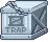 Trap Shipment, Smith Shipment |
DMG Shipment, Fight Shipment, Utility Shipment | Drop Shipment, Divine Shipment, Gaming Shipment, Scurvy Shipment, Construction Shipment, Myriad Shipment | |
| Fish Shipment, Catching Shipment, WSP Shipment, Trap Shipment, Chop Shipment, Mine Shipment, Food Shipment, Mana Shipment, Health Shipment | DMG Shipment, Fight Shipment, Utility Shipment | Drop Shipment, Divine Shipment, Gaming Shipment, Scurvy Shipment, Construction Shipment, Myriad Shipment |
위 유틸리티 칼럼에는 World 5 관련 박스인 Box of Gosh, Gaming Loot Crate, Scurvy C'arr'ate가 포함됩니다. 이들은 Divinity 경험치 및 Gaming·Sailing AFK 진행에 유용하므로 모든 캐릭터에게 도움이 됩니다. Construction Container는 모든 캐릭터의 신전 충전 속도를 높여줍니다. 위 우선순위를 모두 채운 뒤에는 나머지 박스도 모든 캐릭터에서 최대로 올리세요.
Post Office 팁 & 리셋
- 일찍 시작하기: "Post Office 해금은 World 2 초반에 구하기 어려운 Hermit Cans와 Distilled Water가 필요해 까다롭습니다." 그럼에도 불구하고 이를 우선시하는 것이 중요한데, 해금이 늦어질수록 주문을 완료해 박스를 모을 수 있는 날이 그만큼 줄어들기 때문입니다.
- 균형 잡힌 박스 업그레이드: 대부분의 Post Office 박스 주문에서 처음 200개 박스가 다음 200개보다 효율이 높습니다. 따라서 핵심 박스를 400까지 최대화하기 전에 먼저 모든 핵심 박스를 200까지 올리는 것이 더 효율적입니다.
- 스트릭 관리: 스트릭은 추가 박스를 생성하므로 유용하지만, 스트릭이 높아질수록(최대 100) 필요한 자원도 늘어납니다. 진행 단계에 맞게 추가 박스 극대화와 자원 소모 사이의 균형을 찾아야 Post Office에 과도한 시간이나 자원을 낭비하지 않습니다.
- 어려운 주문 건너뛰기: Plan-it Express나 Down Undelivery의 어려운 주문은 건너뛰는 편이 나을 때가 많습니다. 해당 아이템을 구하는 데 드는 시간이 얻는 이익보다 크기 때문입니다. 은색 펜(Silver Pen)으로 새로고침하거나 3일을 기다리면 펜 없이도 주문이 갱신됩니다. 단, 주문 스트릭에 방패가 붙어 있을 경우 5 이상의 스트릭에서는 은색 펜이 방패를 제거할 수 있으니 주의하세요.
- Silver Pen으로 더 많은 박스 얻기: 은색 펜을 박스로 전환하는 가장 좋은 방법은 World 1·World 2의 흔한 자원을 비축한 뒤 Simple Shippin 또는 Dudes Next Door 주문을 완료하고 바로 초기화하는 것입니다.
- Post Office Box 리셋: "Post Office Box Reseto Magnifico" 아이템으로 특정 캐릭터의 박스 배분을 초기화할 수 있으며, Lord of the Hunt 퀘스트, Gem Shop, 이벤트에서 입수 가능합니다. 무료로 얻었고 현재 박스 배분이 마음에 들지 않는다면 사용을 고려해볼 수 있지만, 결국 모든 박스를 최대로 올릴 수 있으므로 이 아이템에 젬을 낭비하지 마세요.
- Daily Boxes: 아래에 소개된 여러 무료 일일 박스 소스들은 자원 소모 없이 Post Office 진행 속도를 크게 높여 줍니다.
무료 일일 박스 소스
| 소스 | 효과 | 비고 |
|---|---|---|
| Upgrade Vault | 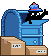 Daily Mailbox – 로그인할 때마다 Post Office 박스 1개 획득 |
레벨당 1개 (최대 10개). Vault Mastery II로 곱산하면 하루 최대 15개. |
| Atom Collider | Beryllium – Post Office Penner | 매일 Post Office의 은색 펜 1개가 모든 캐릭터의 PO Box로 즉시 전환됩니다 (원자 레벨당 7개). |
| Event Shop | Automated Mail | 플레이하는 매일 Post Office 박스 +5개. |